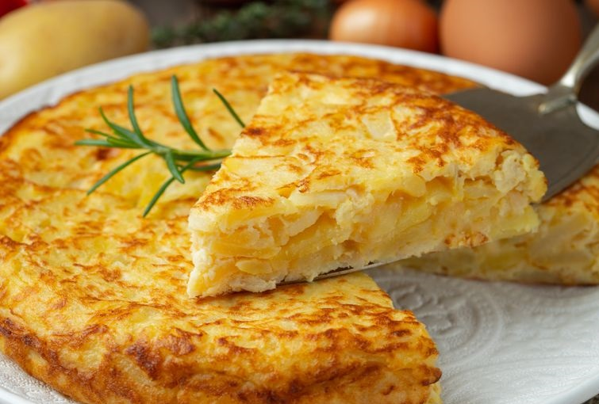

Tortilla de Papas
Te enseñaremos cómo hacer una auténtica tortilla de papas española paso a paso, con los mejores tips y trucos para que quede deliciosa!

Descripción:
La receta de tortilla española es muy popular y conocida por todos, pero no toda la gente conoce los tips y trucos para que la tortilla de papas salga perfecta. En el video de hoy vamos a aprender de los mejores consejos: cómo cortar las papas? Lleva cebolla o no? Cuántos huevos utilizamos? Cuán cocida debe quedar? Todas las preguntas anteriores se responden en los gustos de cada uno. Aquí vamos a aprender a preparar la mejor tortilla del planeta y para todos los gustos: mas sequita, mas babé, etc.
{kind=link}
Ingredientes:
- 4 Huevos
- 3 papas medianas
- 1/2 cebolla
- Sal
- Aceite
Pasos:
- Cortar las papas en rodajas finas.
- Colocar abundante aceite en una sartén. En cuanto el aceite este tibio vamos a agregar todas las papas. Las dejamos durante 5 minutos.
- Mientras tanto vamos a cortar la cebolla. Pasados los 5 minutos agregamos las cebollas a la sartén con las papas, revolviendo suavemente.
- Agregamos un poco de sal y vamos a tapar la sartén. Así la dejamos durante 15-20 minutos mientras vamos revolviendo suave.
- Una vez que las papas estén cocidas, vamos a proceder a colarlas, hasta que baje todo el aceite.
- Colocar los 4 huevos en un bol con un poco de sal y batirlos bien durante unos minutos.
- Agregar las papas con cebollas al bol y volver a batir bien hasta que esté todo integrado y unido.
- Agregamos un chorro de aceite en una sartén. Colocamos la sartén a fuego fuerte.
- Cuando esté bien caliente el aceite, agregamos la mezcla que tenemos en el bol y movemos la sartén agitándola durante 30 segundos.
- Luego vamos a poner el fuego bajo y con una espátula vamos a ir corrigiendo los bordes durante 5 minutos.
- Luego vamos a darla vuelta. Para ésto vamos a colocar un plato encima de la sarten. Dejamos cocer unos 3-4 minutos más.
- Para sacarla vamos a volver a darla vuelta. Buon appetito!